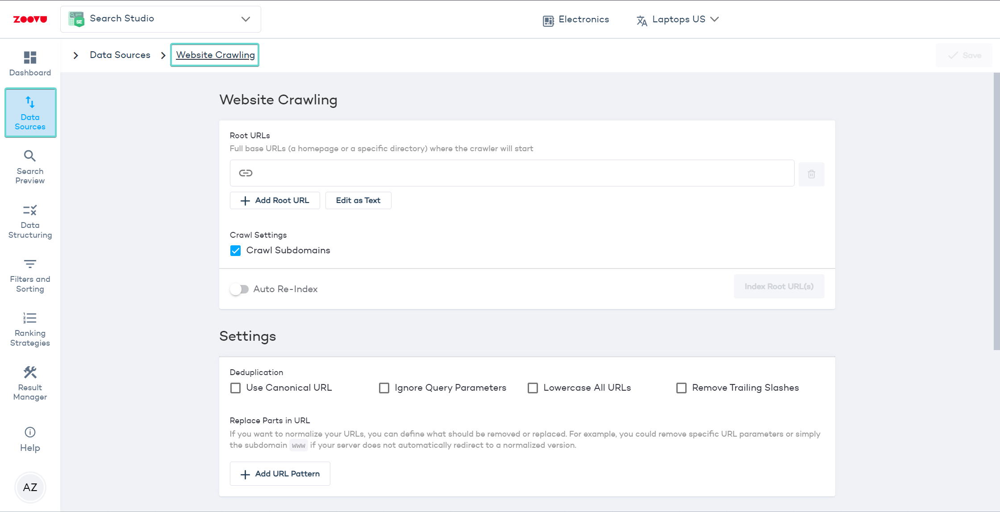
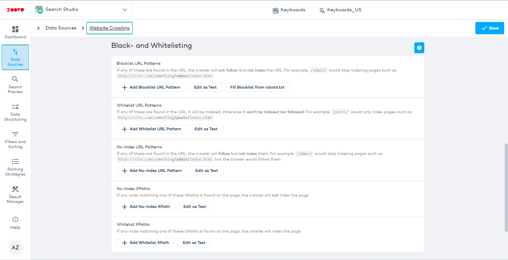
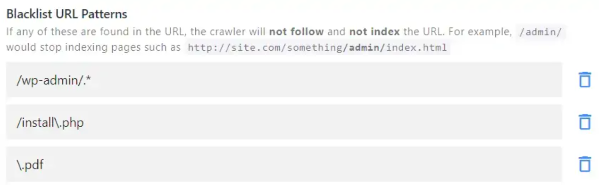
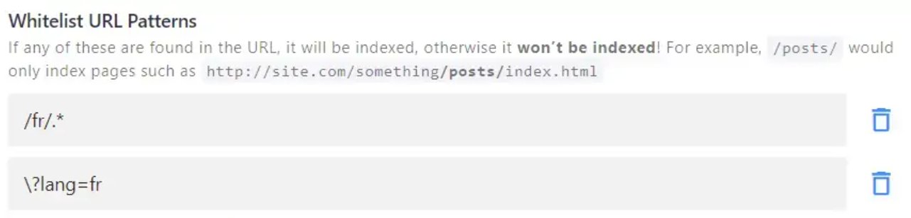
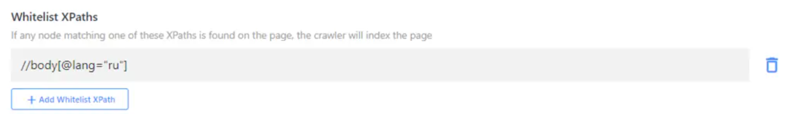

Adjust the crawler settings if you notice missing, unwanted, or duplicate pages after setting up a crawler for your site or sitemap. It can also speed up the crawling process.
To access the settings, log in to Search Studio and go to Data Sources > Website Crawling.
Root URLs are the starting points for the crawler.
Enter full base URLs - such as a homepage or a specific directory, from where the crawler will begin its operation. For example: https://zoovu.com.
/ placed at the end of a URL. Enabling this option will help standardize URL format across your site’s indexing.\\tag\\.If you want to remove specific pages or documents from your search results (without deleting them from your website), you can apply blacklisting, whitelisting, or no-index rules.
URL and XPath patterns are interpreted as regular expressions so remember to put a backslash \ before special characters, such as []\^$.|?*+(){}.
To access these settings, go to Search Studio > Data Sources > Website Crawling and click on "Create first rule".
These patterns tell the crawler to completely ignore specific areas of your site or even types of documents.
In this example, pages found under /wp-admin/ or .php pages will not be indexed, and the crawler will not follow any links found on those pages either. The crawler will also not index any PDFs.
Blacklisting takes priority over whitelisting. If there's a conflict in your settings, the whitelisted patterns will be ignored.
These patterns restrict the crawler to a specific area of your site.
For example, imagine you want to limit your search to blog pages only. If you whitelist /blog/, our crawler won't index anything except for the URLs containing /blog/.
This can also be useful for multilingual sites. Depending on your URL structure, you could, for instance, use the following patterns to limit the search to French-language pages only:
Make sure that your root URL matches your whitelisting pattern (e.g., https://website.com/fr/). If the root URL doesn't contain the whitelist pattern, it will be blacklisted (which means nothing can be indexed, and there can be no search results).
These patterns have the same effect as the "noindex,follow" robots meta tag: the crawler follows the page and all the outgoing links, but doesn't include the no-indexed page in the results. (It is different from blacklisting, where the crawler fully ignores the page without checking it for other useful links.)
Set up no-index patterns for pages that should not be in your search results, but contain links to important pages. For example, you could exclude your Blog landing page, but index all your blog posts, or exclude "tag" pages, but index the tagged posts.
Note the $ sign: it indicates where the matching pattern should stop. In this case, URLs linking from the escaped page, such as /specific-url-to-ignore/product1, will still be followed, indexed, and shown in search results.
No-index URL patterns take priority over whitelisting. If there's a conflict in your settings, the whitelisted patterns will be ignored.
Sometimes you need to no-index pages that don't share any specific URL patterns. Instead of adding every URL one by one to the no-index URL patterns, check if you can no-index them based on a specific CSS class or ID.
If you have category pages for your products, and you want to hide them from the search results while still crawling your products. If those category pages have a distinct element which isn't used elsewhere, e.g. <div class="product-grid"></div>, you can add it as a No-Index XPath: //div[@class="product-grid"].
In this case, the crawler would go to the category pages, then follow and index all the outgoing URLs, so your product pages will get indexed and shown in the results. If you need help with XPaths, check out this guide or reach out to support.
Using a lot of no-index URL patterns or no-index XPaths slows down the indexing process, as the crawler needs to scan every page and check it against all the indexing rules. If you're sure that a page or a directory with all outgoing links can be safely excluded from indexing, use the blacklist URL pattern feature instead.
Similar to whitelist URL patterns, whitelisting by XPath restricts the crawler to a specific area of your site.
If you want to limit your search to specific pages, but they do not share any URL pattern, then the whitelist XPaths option will come in handy.
For example, the following XPath limits the search to Russian-language pages only:
"Whitelist XPath" takes priority over no-index XPath. If there's a conflict in your settings, the no-index XPaths will be ignored.